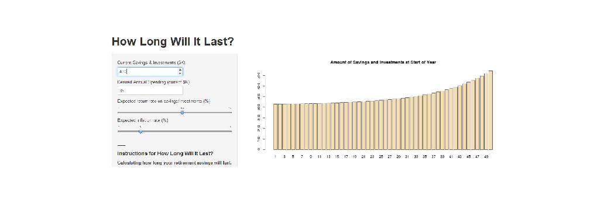

1. Planning for retirement is important, but often hard and scary.
2. People need easy tools to help quickly understand where they are and where they are going.
3. They need to include inflation and investment return rate in their planning.
4. Future inflation and return rates are uncertain. When thinking about retirement, people need tools for dealing with the uncertainty.
5. Many people are not comfortable with numbers and formulas. A picture is worth a thousand words.
How Long Will It Last?
Calculating the Lifetime of Your Retirement Savings
kthoover
Why you need "How Long Will It Last?
Here it is -- How Long Will It Last?ddddd

Enter you current savings and investments in the top scroll box and how much you think you will spend in your first year of retirement in the second scoll box.
Use the sliders to enter estimates for rate of return on your investments and inflation rate.
The model will tell you how long your retirement nest-egg will last.
Improve Your Future

Change the setting to see how to make your nest egg last longer.
You can see what it will take to reach your goals.
With good planning, you may even be able to grow you nest-egg in retirement.
Possible Improvements and Next Steps
1. Allow for defined contributions, including Social Security and pensions.
2. Allow future expenses to vary other than increasing with inflation.
3. Allow a delay between today and the time when retirement spending starts.
4. Allow users to input a number of years and have the required nest-egg calculated.
5. Allow users to save past scenarios in some way.
d <- Sys.Date()
t <- paste(weekdays(d), months(d), as.numeric(format(d, "%d")), as.numeric(format(d,
"%Y")))